今日主线
Top themes
geopolitical_risk: Oil prices approach Iran-war highs as soaring tanker rates trigger a second energy squeeze
financial_stability: Philip R. Lane: Euro liquidity lines and the international monetary system
earnings: Bitcoin gives back its run at $85,000 as Tesla and Meta fail to calm AI nerves
核心资产
1D snapshot · 2026-10-23
美股 SPY
0.53%
QQQ
1.05%
VIX
14.09%
BTC
-3.53%
Gold
-2.67%
Oil
2.04%
异动雷达
按 1D 绝对波动排序 · 2026-10-23
^VIX
US_MACRO_MARKET · strong_uptrend · 19.03
14.09%
9988.HK
HK_MARKET · strong_downtrend · 97.35
-6.12%
1211.HK
HK_MARKET · strong_downtrend · 67.40
-5.27%
SI=F
COMMODITIES · strong_downtrend · 54.52
-5.05%
3690.HK
HK_MARKET · downtrend · 71.30
-4.55%
RIPPLE
CRYPTO · strong_downtrend · 1.31
-4.30%
1810.HK
HK_MARKET · range_bound · 25.80
-3.73%
BZ=F
COMMODITIES · strong_uptrend · 112.87
3.72%
Must Read
优先阅读
MarketWatch Top Stories
geopolitical_risk
high
BZ=F
CL=F
SPY
金融稳定信号可能放大跨资产波动，并影响央行反应函数。
Tier 1
ECB Press Releases
financial_stability
low
大型科技股盈利和资本开支会影响纳指、半导体和 AI 交易主线。
Tier 2
CoinDesk
earnings
high
AMZN
GOOGL
META
MSFT
NVDA
CoinDesk
regulation
high
BTC
COIN
ETH
crypto market
图表面板
Summary charts · 2026-10-23
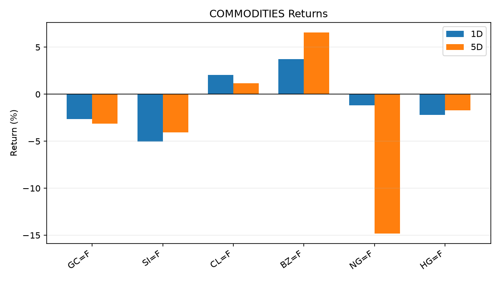
COMMODITIES
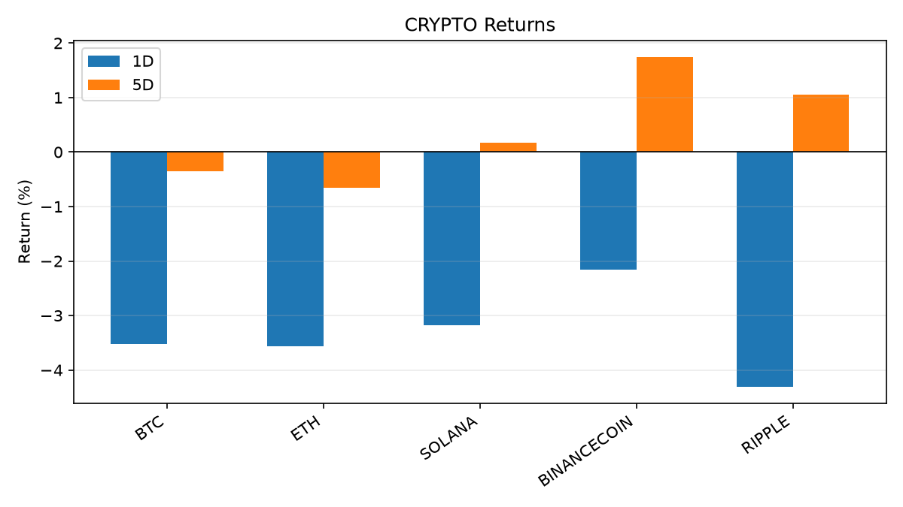
CRYPTO
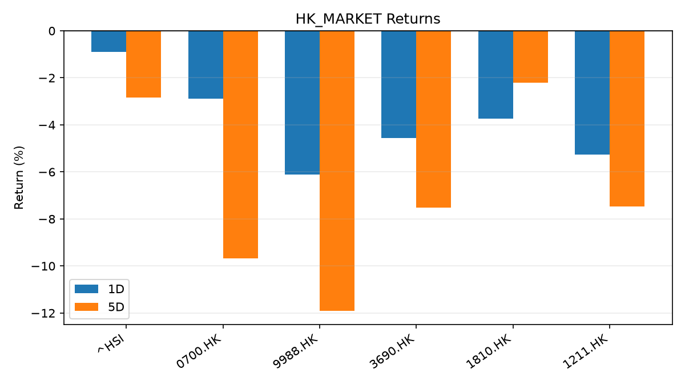
HK_MARKET
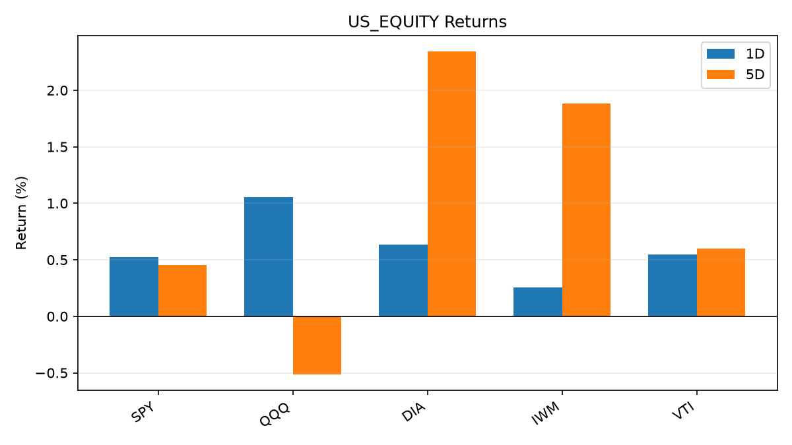
US_EQUITY
Global Macro Morning Briefing - 2026-10-23
Not financial advice / 非投资建议。
0. 今日总览
市场状态：mixed。市场信号不足，暂不判断明确状态。 但存在信号冲突，需要降低单一叙事置信度。
今日三大主线：
geopolitical_risk: Oil prices approach Iran-war highs as soaring tanker rates trigger a second energy squeeze
financial_stability: Philip R. Lane: Euro liquidity lines and the international monetary system
earnings: Bitcoin gives back its run at $85,000 as Tesla and Meta fail to calm AI nerves
一句话结论：今日晨报重点关注：地缘风险可能推升避险需求、能源价格和市场波动率。；金融稳定信号可能放大跨资产波动，并影响央行反应函数。。跨资产方面，SPY 1D 0.53%；QQQ 1D 1.05%；^VIX 1D 14.09%；TLT 1D 0.14%；GC=F 1D -2.67%；CL=F 1D 2.04%；BTC 1D -3.53%；ETH 1D -3.57%；市场信号不足，暂不判断明确状态。 但存在信号冲突，需要降低单一叙事置信度。政策、通胀、利率、美元、美债、能源和加密监管仍是主要观察线索。所有结论仅基于公开数据与短摘要整理，不构成投资建议。
1. 隔夜跨资产市场
美股：SPY 1D 0.53%，QQQ 1D 1.05%，整体趋势需结合 VIX 和利率确认。
美债/美元：TLT 1D 0.14%，美元指数 1D -0.27%，是判断折现率压力的核心线索。
黄金/原油：黄金 1D -2.67%，原油 1D 2.04%，用于观察避险、通胀和地缘风险。
加密：BTC 1D -3.53%，ETH 1D -3.57%，关注是否独立于纳指走出加密自身行情。
港股/A股：恒生 1D -0.90%，沪深300/上证 1D n/a，重点看中国政策预期与人民币线索。
风险观察：关注后续数据是否确认当前跨资产信号。
US_EQUITY
symbol
latest close
1D
5D
1M
YTD
trend
SPY
773.09
0.53%
0.45%
-0.04%
13.16%
uptrend
QQQ
725.20
1.05%
-0.51%
-2.98%
18.28%
range_bound
DIA
527.70
0.64%
2.34%
1.87%
9.11%
range_bound
IWM
276.48
0.25%
1.88%
-3.74%
11.13%
downtrend
VTI
379.15
0.55%
0.60%
-0.56%
12.74%
uptrend
US_MACRO_MARKET
symbol
latest close
1D
5D
1M
YTD
trend
^VIX
19.03
14.09%
15.61%
25.36%
31.15%
strong_uptrend
DX-Y.NYB
101.51
-0.27%
-0.48%
0.41%
3.14%
range_bound
TLT
80.24
0.14%
1.71%
-1.85%
-7.80%
range_bound
IEF
90.23
-0.02%
0.58%
-1.02%
-6.09%
range_bound
COMMODITIES
symbol
latest close
1D
5D
1M
YTD
trend
GC=F
4,039.40
-2.67%
-3.13%
-6.46%
-6.70%
strong_downtrend
SI=F
54.52
-5.05%
-4.08%
-15.32%
-22.73%
strong_downtrend
CL=F
99.13
2.04%
1.18%
7.56%
72.94%
strong_uptrend
BZ=F
112.87
3.72%
6.56%
9.50%
85.79%
strong_uptrend
NG=F
2.76
-1.18%
-14.80%
-8.80%
-23.80%
range_bound
HG=F
6.40
-2.19%
-1.71%
-4.16%
13.48%
strong_downtrend
HK_MARKET
symbol
latest close
1D
5D
1M
YTD
trend
^HSI
23,651.87
-0.90%
-2.85%
-4.44%
-10.20%
strong_downtrend
0700.HK
382.40
-2.89%
-9.68%
-11.07%
-38.62%
strong_downtrend
9988.HK
97.35
-6.12%
-11.90%
-13.54%
-34.66%
strong_downtrend
3690.HK
71.30
-4.55%
-7.52%
-3.65%
-31.84%
downtrend
1810.HK
25.80
-3.73%
-2.20%
-6.45%
-35.95%
range_bound
1211.HK
67.40
-5.27%
-7.48%
-17.00%
-31.75%
strong_downtrend
CRYPTO
symbol
latest close
1D
5D
1M
YTD
trend
BTC
81,117.82
-3.53%
-0.36%
-4.39%
-7.37%
range_bound
ETH
2,384.41
-3.57%
-0.66%
-11.86%
-19.72%
strong_downtrend
SOLANA
103.54
-3.18%
0.17%
-12.54%
-16.85%
range_bound
BINANCECOIN
729.92
-2.15%
1.74%
-5.38%
-15.39%
range_bound
RIPPLE
1.31
-4.30%
1.06%
-12.57%
-29.02%
strong_downtrend
2. 今日最重要的 10 条新闻
1. Oil prices approach Iran-war highs as soaring tanker rates trigger a second energy squeeze
2. Philip R. Lane: Euro liquidity lines and the international monetary system
来源：CoinDesk
时间：2026-10-22T03:51:34+00:00
地区：global
事件类型：earnings
重要性层级：Tier 2
一句话摘要：Bitcoin gives back its run at $85,000 as Tesla and Meta fail to calm AI nerves
为什么重要：大型科技股盈利和资本开支会影响纳指、半导体和 AI 交易主线。
可能影响：主要影响 QQQ，方向为 mixed，强度 high；AI 资本开支会影响大型科技股盈利和估值预期。
资产：QQQ
方向：mixed
强度：high
原因：AI 资本开支会影响大型科技股盈利和估值预期。
资产：SMH
方向：mixed
强度：high
原因：AI 投资周期直接影响半导体需求。
资产：NVDA
方向：mixed
强度：high
原因：AI 训练和推理需求是英伟达收入预期核心变量。
资产：MSFT
方向：mixed
强度：medium
原因：云和 AI 资本开支影响利润率与增长叙事。
资产：GOOGL
方向：mixed
强度：medium
原因：AI 投资和搜索商业化影响估值。
资产：META
方向：mixed
强度：medium
原因：AI 基建支出与广告效率共同影响市场预期。
原文链接：https://www.coindesk.com/markets/2026/10/22/bitcoin-gives-back-its-run-at-usd85-000-as-tesla-and-meta-fail-to-calm-ai-nerves
4. Why centralized exchanges refuse to list legacy crypto tokens without explicit SEC immunity
5. Crypto traders seek shelter in bitcoin as altcoins slide and ETF flows wobble
6. The U.S. stock market is fracturing into two camps, and it’s leaving investors with a brutal case of whiplash
3. 政策与央行观察
1. Philip R. Lane: Euro liquidity lines and the international monetary system
2. Why centralized exchanges refuse to list legacy crypto tokens without explicit SEC immunity
4. 市场异动与图表
SPY 上涨 0.53%
QQQ 上涨 1.05%
VIX 上涨 14.09%
Gold 下跌 -2.67%
Oil 上涨 2.04%
BTC 下跌 -3.53%
ETH 下跌 -3.57%
信号矛盾
股指上涨但 VIX 同时走高，风险偏好信号不一致。
SPY
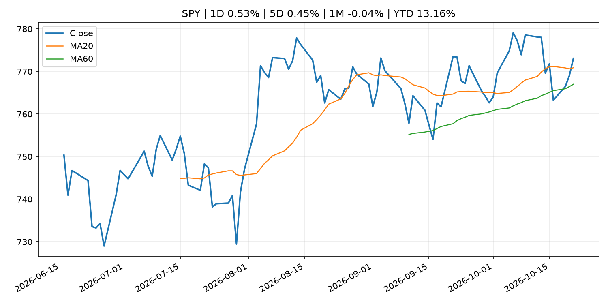
QQQ
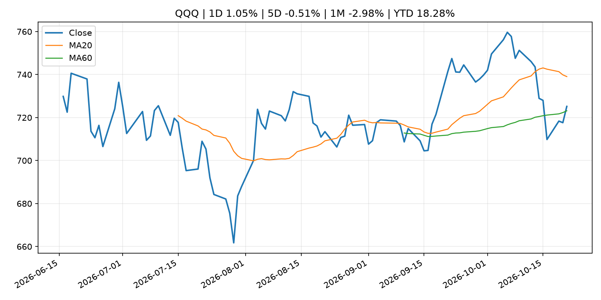
^VIX
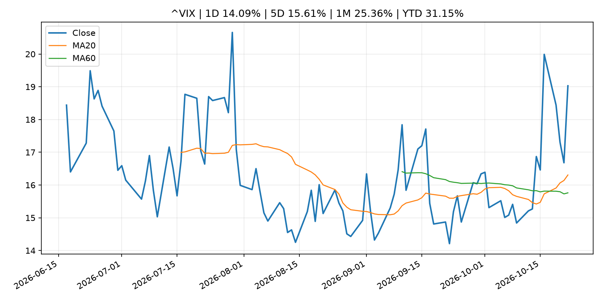
TLT
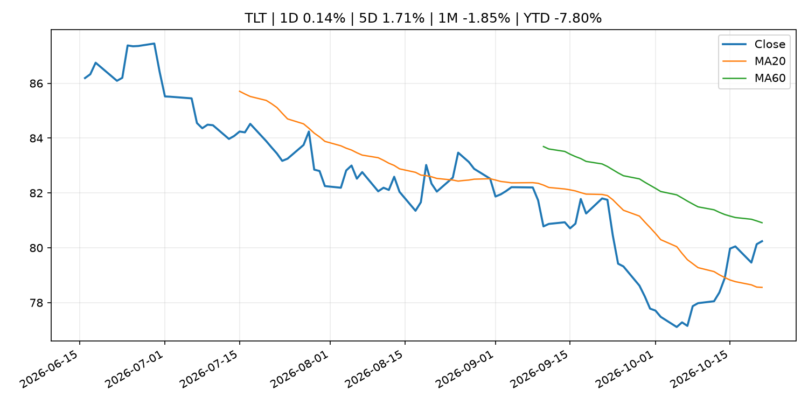
GC=F
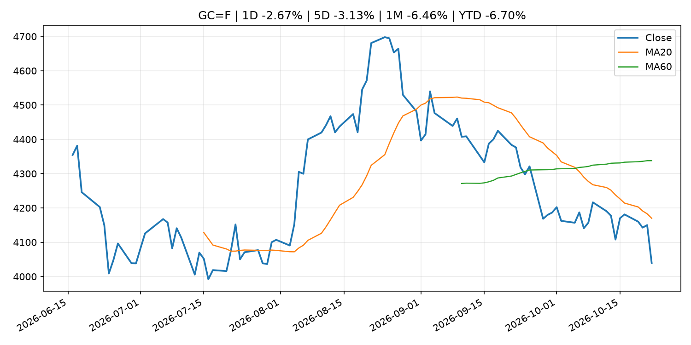
CL=F
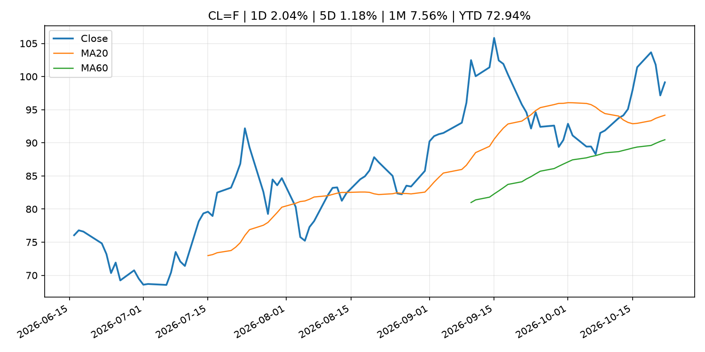
BTC
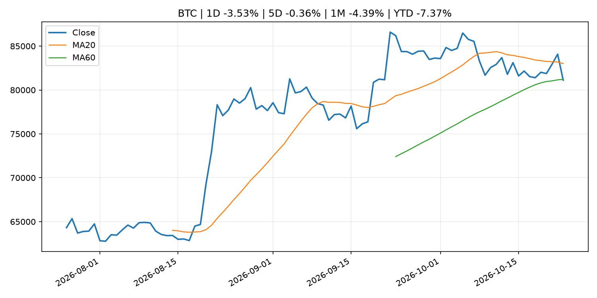
ETH
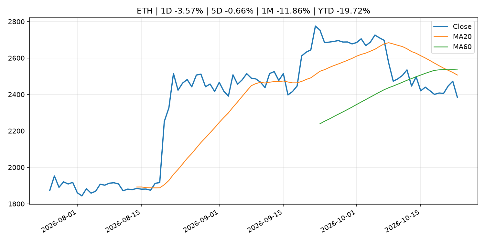
^HSI
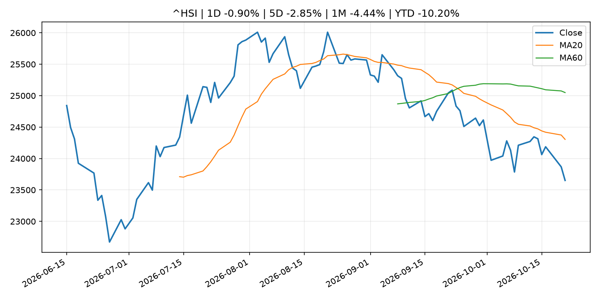
5. 华尔街与机构公开观点
6. 今日重点关注
经济数据：经济数据：暂无可靠公开日历数据；如配置经济日历源后可自动填充。
央行讲话：央行讲话：暂无可靠公开日历数据；重点跟踪 Fed、ECB、BoJ、PBOC 官网 RSS。
财报：财报：暂无可靠数据。
政策事件：政策事件：暂无可靠数据。
风险提醒：风险提醒：关注数据源失败项、突发地缘风险、利率和美元的二阶反应。
7. 英文金融表达与宏观概念
real yield ：实际收益率，名义利率扣除通胀预期后的收益率。 例句：Gold often reacts more to real yields than nominal yields.risk-off ：避险模式，资金偏向美元、国债、黄金等防御资产。 例句：A geopolitical shock can push markets into risk-off mode.supply disruption ：供给扰动，通常指能源或商品供应受冲突、减产或天气影响。 例句：Supply disruption can lift oil prices and inflation expectations.market structure ：市场结构，指交易、托管、清算、ETF、监管等制度安排。 例句：Crypto market structure rules can affect institutional participation.inflation expectations ：通胀预期，指家庭、企业或市场对未来通胀的预估。 例句：Inflation expectations can shape wage bargaining and bond yields.terminal rate ：终端利率，市场预期本轮加息周期的最高政策利率。 例句：A higher terminal rate can pressure growth stocks.
8. 背景材料
The U.S. stock market is fracturing into two camps, and it’s leaving investors with a brutal case of whiplash （MarketWatch Top Stories，other）：The artificial-intelligence trade is on the ropes. CNN’s “Fear & Greed” index is screaming fear, and the yield on the 10-year Treasury note just clinched its biggest daily drop since the collapse of Silicon Valley Bank.Treasury yields log biggest drop since the 2023 banking crisis. Here’s what’s going on. （MarketWatch Top Stories，other）：‘It’s a take-back trade,’ says PGIM’s Tipp. ‘Not an all-out fear of recession type of situation.’Crypto for Advisors: Stablecoins are ready for prime time （CoinDesk，other）：Crypto for Advisors: Stablecoins are ready for prime timeCrypto traders seek shelter in bitcoin as altcoins slide and ETF flows wobble （CoinDesk，other）：Crypto traders seek shelter in bitcoin as altcoins slide and ETF flows wobbleBitcoin slides below $82,000 as AI doubts return, with DeFi tokens leading declines （CoinDesk，other）：Bitcoin slides below $82,000 as AI doubts return, with DeFi tokens leading declinesLive updates: Bitcoin falls back to $81,000, with interest rates tumbling as stocks crack （CoinDesk，other）：Live updates: Bitcoin falls back to $81,000, with interest rates tumbling as stocks crackAsian stocks tumble, bitcoin retreats as China enters bear market （CoinDesk，other）：Asian stocks tumble, bitcoin retreats as China enters bear marketJapanese Government Bonds Held by the Bank of Japan （Bank of Japan Announcements，other）：Japanese Government Bonds Held by the Bank of JapanDevelopments in Real Exports and Real Imports （Bank of Japan Announcements，other）：Developments in Real Exports and Real ImportsBitcoin ETFs attract $1.08 billion in 3 days but it may not be enough for a steep rally （CoinDesk，other）：Bitcoin ETFs attract $1.08 billion in 3 days but it may not be enough for a steep rallyBank of Japan Accounts (October 20) （Bank of Japan Announcements，routine_announcement）：Bank of Japan Accounts (October 20)Senior Loan Officer Opinion Survey (Oct.) （Bank of Japan Announcements，other）：Senior Loan Officer Opinion Survey (Oct.)Statistics on Securities Financing Transactions in Japan （Bank of Japan Announcements，other）：Statistics on Securities Financing Transactions in JapanGoldman Sachs, JPMorgan and Morgan Stanley are dominating the AI stock boom. Here's their edge （CNBC Economy，other）：Wall Street’s Big Three have generated $52 billion in equity trading revenue this year, capturing about 80% of the market on rising margin lending to hedge funds.Japanese visitors may be able to pay with yen stablecoins in South Korea under Shinhan-SBI pact （CoinDesk，other）：Japanese visitors may be able to pay with yen stablecoins in South Korea under Shinhan-SBI pactBitcoin risk management grows more popular as the 'just bet on price' era fades （CoinDesk，other）：Bitcoin risk management grows more popular as the 'just bet on price' era fadesPiero Cipollone: Pontes and Appia: unlocking opportunities for banks （ECB Press Releases，other）：Piero Cipollone: Pontes and Appia: unlocking opportunities for banks
9. 数据源、失败项与免责声明
采集时间：2026-10-23T00:25:23
数据源：公开 RSS、Yahoo Finance、CoinGecko、AKShare、FRED、SEC data.sec.gov，以及用户自有 inputs/reports 文件。
合规说明：不绕过 WSJ、Bloomberg、FT、Reuters 等付费墙；对付费媒体只使用公开 RSS 标题、摘要、链接和发布时间。
免责声明：Not financial advice / 非投资建议。本项目仅供个人学习、研究和信息整理，不构成投资建议、交易建议或任何收益承诺。
失败或跳过的数据源：
crypto data failed coin=dogecoin
China market data failed symbol=上证指数: empty dataframe
China market data failed symbol=深证成指: empty dataframe
China market data failed symbol=创业板指: empty dataframe
China market data failed symbol=沪深300: empty dataframe
China market data failed symbol=中证500: empty dataframe
China market data failed symbol=科创50: empty dataframe
FRED_API_KEY not set; skipping FRED macro series
SEC failed cik=0000320193
SEC failed cik=0000789019
SEC failed cik=0001045810
SEC failed cik=0001318605
SEC failed cik=0001577552